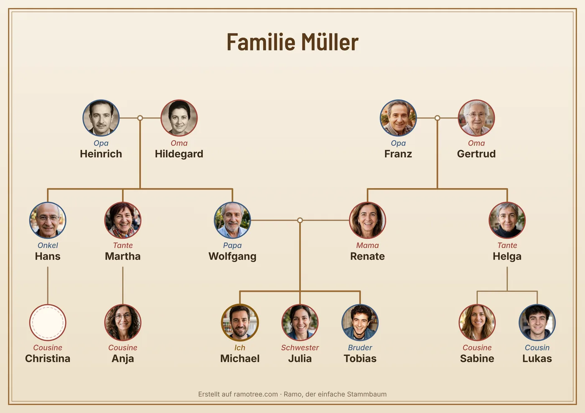

Stammbaum erstellen, Schritt für Schritt
Einen Stammbaum zu erstellen ist leichter, als es aussieht: Fang mit dem an, was du schon weißt, frag die Älteren, solange es geht, und ergänze ihn nach und nach. Hier sind die Schritte und eine kostenlose Vorlage zum Ausdrucken.
Willst du gleich anfangen? Erstelle deinen Stammbaum direkt hier: Großeltern, Eltern, Onkel, Cousins und Geschwister, auf Wunsch mit Fotos, und lade ihn als PDF oder Bild herunter.

1. Fang bei dir an
Schreib deinen Namen auf und wann und wo du geboren bist. Dann deine Eltern und Geschwister, danach deine Großeltern. Notiere alles, was du auswendig weißt, auch wenn es unvollständig ist: Ein ungefähres Datum („um 1930“) ist besser als ein leeres Feld.
2. Frag die Familie
Die Älteren sind die beste Quelle, und was man nicht rechtzeitig fragt, geht verloren. Fragen, die gut funktionieren:
- Wie hießen deine Eltern und Großeltern, auch mit Geburtsnamen?
- Wo und wann wurden sie geboren? Wen haben sie geheiratet, und wo?
- Wie viele Geschwister hatten sie? Was ist aus ihnen geworden?
- Was waren sie von Beruf? Wo haben sie gewohnt?
- Hast du Fotos, Briefe oder Andenken aus dieser Zeit?
Nimm das Fotoalbum mit: Gesichter helfen beim Erinnern. Fotografiere alte Bilder mit dem Handy und nimm das Gespräch auf, wenn es in Ordnung ist.
3. Such die fehlenden Daten
Zu Hause gibt es oft mehr, als man denkt: Stammbuch, Geburts- und Heiratsurkunden, Traueranzeigen und Fotos mit einer Notiz auf der Rückseite. Außerdem helfen die Standesämter (Geburten, Ehen, Sterbefälle), für die Zeit davor die Kirchenbücher, die viele Kirchen und Archive inzwischen digitalisiert haben, und FamilySearch, kostenlos und mit Millionen alter Einträge.
Notiere, woher jede Angabe stammt. Wenn zwei Quellen sich widersprechen, weißt du, welcher du trauen kannst.
4. Ordne ihn: auf Papier oder auf dem Handy
Ein Stammbaum auf Papier ist ideal für den Anfang. Aber der Stammbaum wächst schnell (Geschwister, Onkel, Cousins, Partner…) und das Papier wird zu klein. Mit Ramo fügst du jeden Verwandten hinzu, indem du auf seine Karte tippst, und die App ordnet alles selbst an, mit Fotos, ungefähren Daten und der Verwandtschaft jeder Person. Du brauchst kein Konto, und wenn du schon einen Stammbaum aus einem anderen Programm hast, öffnet Ramo GEDCOM-Dateien.
5. Teile ihn mit der Familie
Schick den Stammbaum als PDF in die Familiengruppe: Jeder kann seinen Zweig mit Ramo kostenlos ergänzen und ihn dir zurückschicken, und Ramo führt die Versionen zusammen, ohne jemanden doppelt anzulegen. Wenn er fertig ist, druck ihn groß aus oder verschenke ihn gerahmt.
Weitere Ratgeber